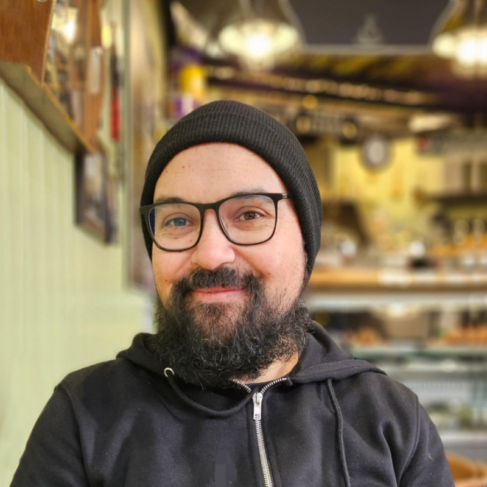

I currently participate in two organisations aimed at promoting and teaching Mapudungun both on Internet and in the city of Concepción, Chile. The first project is Kimeltuwe, which was created in 2015 and has more than 200.000 followers in Facebook. The other project is Fiw-Fiw ñi Dungun, an organisation that teaches Mapudungun through online courses and summer camps since 2019. In this organization, we create our own materials and provide training to form new teachers of the language.
I taught Cultura y Lengua Mapuche (Mapuche Language and Culture) (Código 940408) at the Anthhopology School, Universidad de Concepción, and Introducción a la lengua y cultura mapuche (Introduction to Mapuche language and culture)(Código 731575), at the Departamento de Castellano, Facultad de Humanidades y Arte, Universidad de Concepción.
I have given interviews regarding my work in Mapudungun's language revitalisation effort: